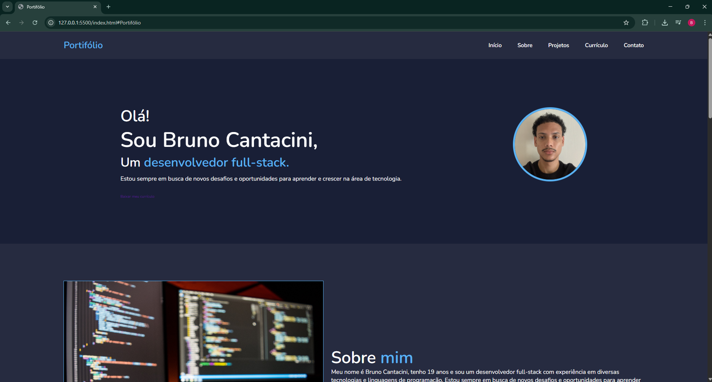
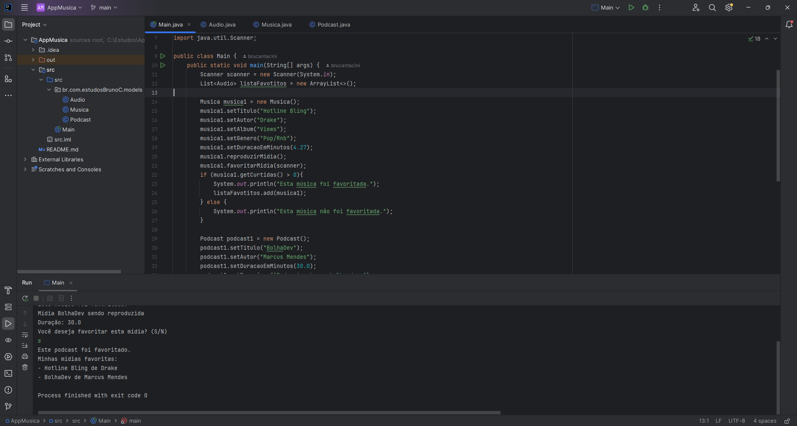
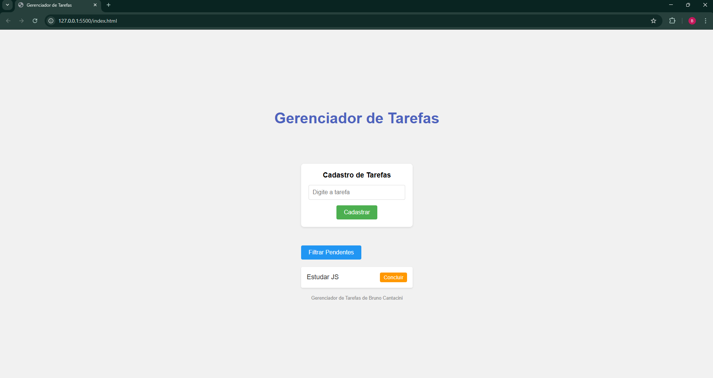
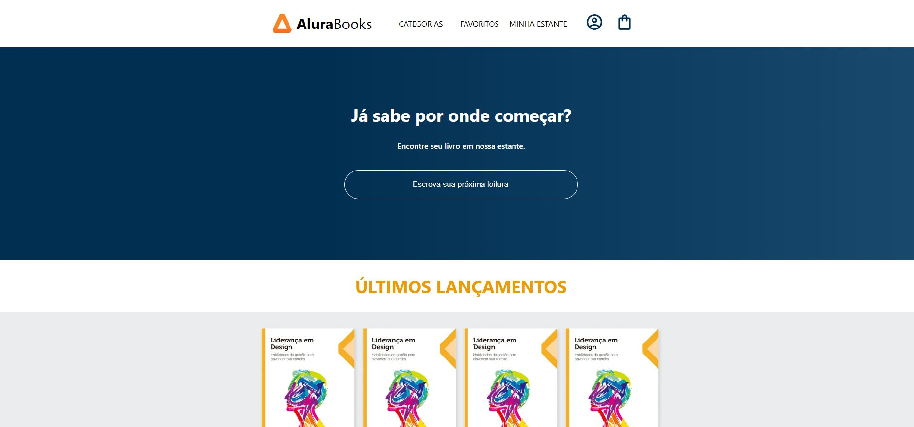

Olá!
Sou Bruno Cantacini,
Um desenvolvedor full-stack.
Estou sempre em busca de novos desafios e oportunidades para aprender e crescer na área de tecnologia.
Baixar meu currículo
Estou sempre em busca de novos desafios e oportunidades para aprender e crescer na área de tecnologia.
Baixar meu currículo

Sempre gostei de resolver problemas e buscar respostas para eles. Isso, minha curiosidade por tecnologia e o interesse de saber como funcionam os computadores desde a adolescência me trouxeram até a programação.
Na paixão que surgiu por essa área vem o desejo de sempre querer ir além e ser desafiado.
Trabalho como desenvolvedor fullstack. Diariamente atuo com diversas tecnologias, como: Python, Java, JavaScript, Git, HTML, CSS, React, Node.js, Next.js e SQL para desenvolver projetos da faculdade e estudar.
Estou em busca da minha primeira oportunidade de emprego na área, vamos nos conectar!
- Desenvolvimento de uma interface web responsiva para o projeto Termo Trilho, focando na experiência do usuário e facilitando a visualização de dados operacionais utilizando html, css, Javascript, next.js, node.js.; - Implementação de lógica backend com Python e Java para processamento de dados, Implementação do CRUD, consumo e criação de APIs; - Utilização de Oracle SQL Developer para manipular e armazenar dados; - Controle de versionamento do projeto com Git e GitHub; - Criação de um chatbot utilizando nuvem da IBM Watson; - Organização da equipe, entregas e responsabilidades do projeto com Trello.
Este é o meu portfólio, desenvolvido com HTML, CSS e JavaScript. Ele apresenta informações sobre mim, meus projetos e como entrar em contato comigo. O design é responsivo e adaptável a diferentes tamanhos de tela.
Este é um projeto simples desenvolvido em Java que simula um reprodutor de mídias. Ele permite reproduzir músicas e podcasts, e favoritar as mídias com base na interação do usuário. O projeto segue boas práticas de organização de pacotes e separação por classes.
Projeto desenvolvido com JavaScript para ajudar a adicionar, filtrar e concluir tarefas. Uma maneira prática de gerenciar tarefas do dia a dia, com uma interface simples e interativa.
Este projeto foi desenvolvido como parte de um curso introdutório de React, onde criei minha primeira aplicação utilizando a biblioteca. A aplicação é um site de livros chamado AluraBooks, com foco em componentização, estilização e manipulação de dados em interface.
